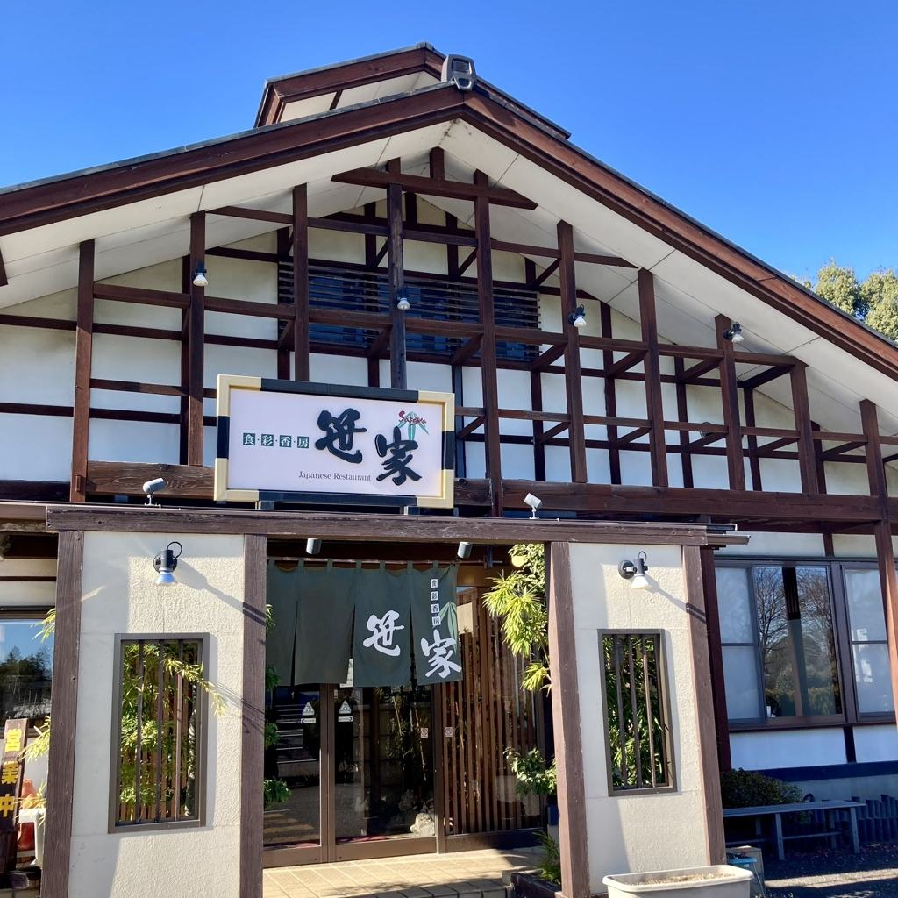
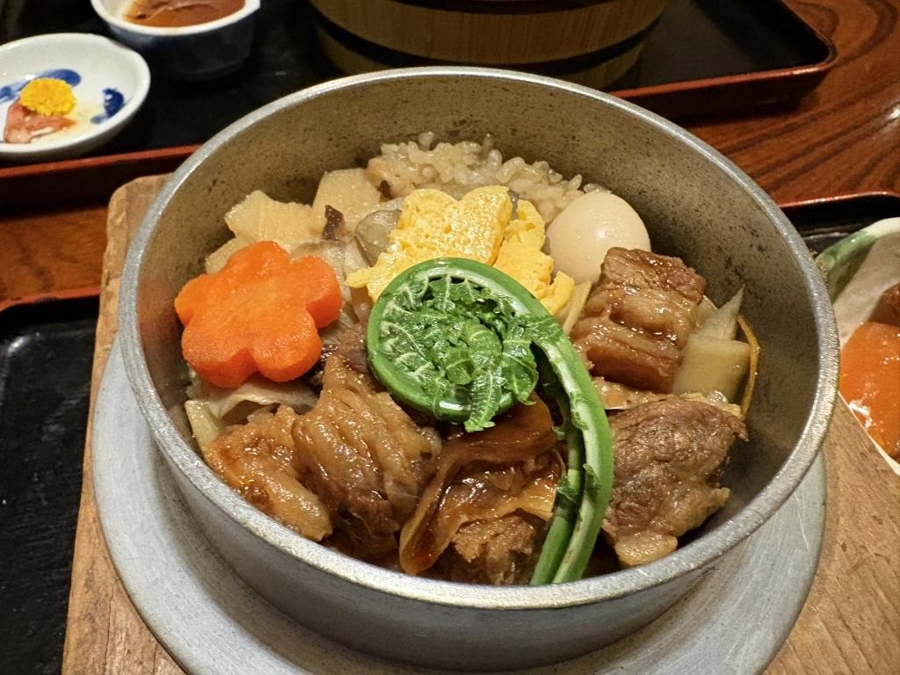
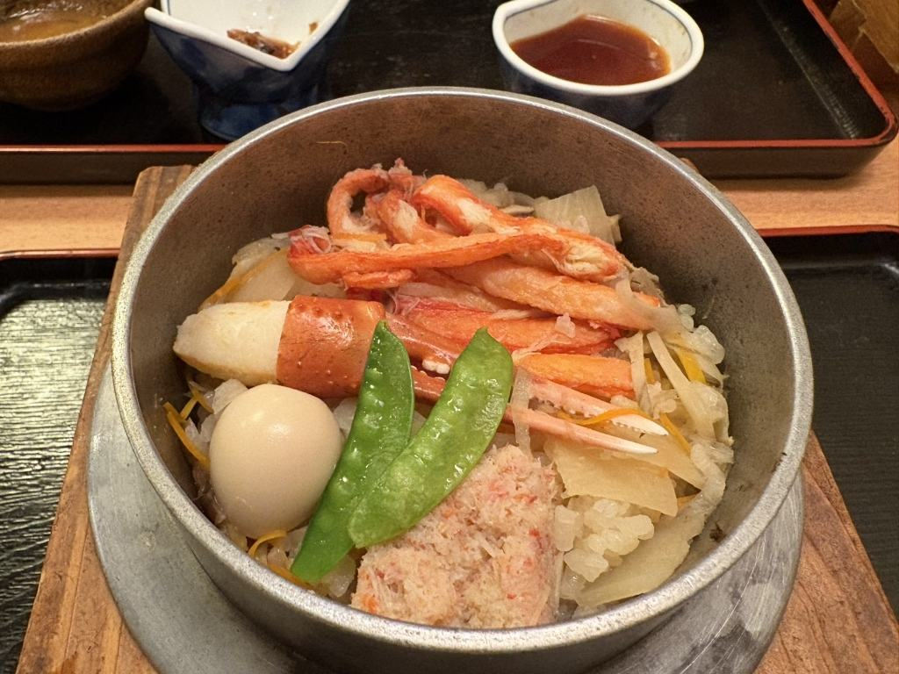
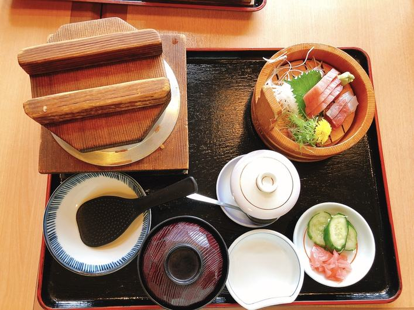
釜めしは、生米から、直火で炊き上げます。炊き上がりまで約20分、お時間をいただきます。お持ち帰りの釜めしは、陶器の釜に入れてお渡しいたします。
お持ち帰りの釜めし（五目・かに・牛肉と舞茸・とり・うなぎ）は陶器の釜でご用意いたします。釜めしのご注文は平日14:00・土日祝14:30までにお願いいたします。
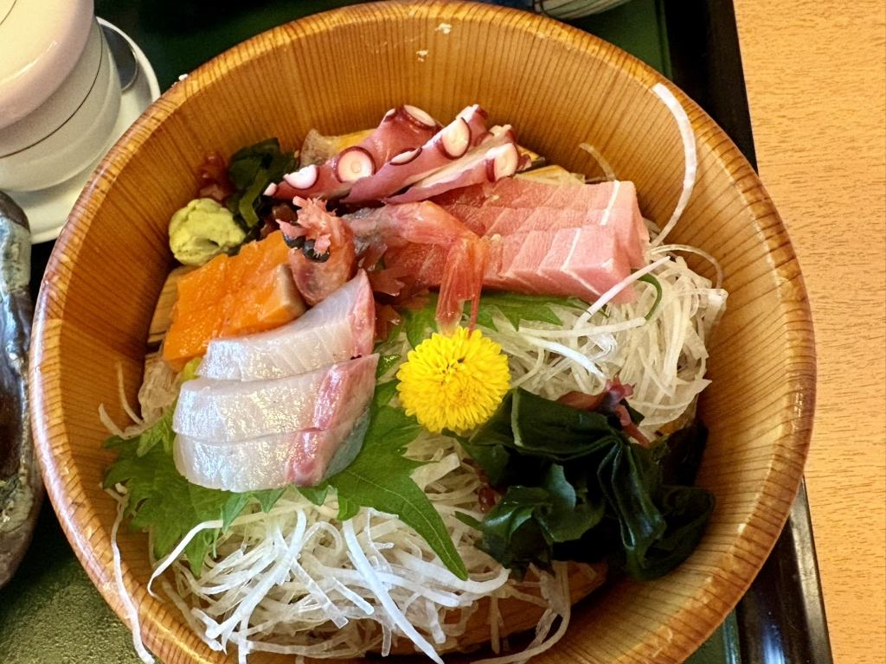
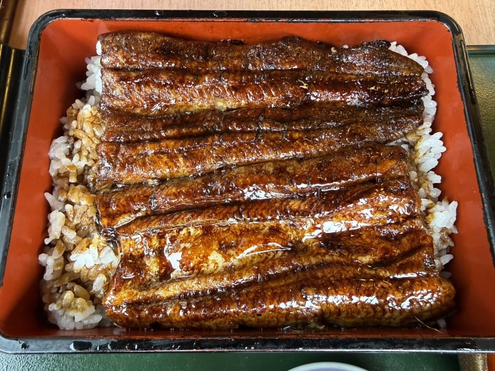
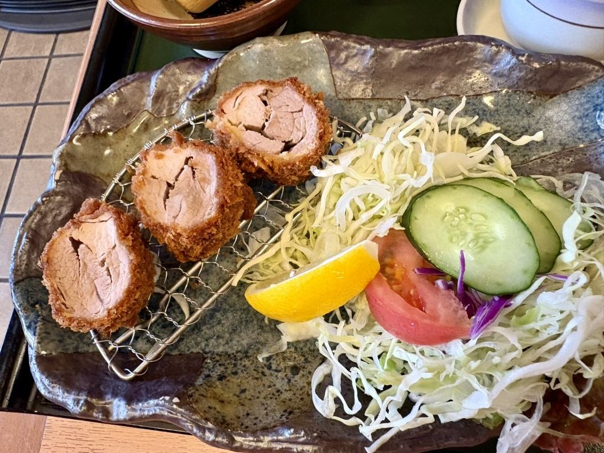
釜めしのほかにも、刺身や寿しの海のもの、うなぎ、国産豚のとんかつまで、和食をひと通りご用意しております。そば・うどんも、単品でも、膳に添えてもお出しします。
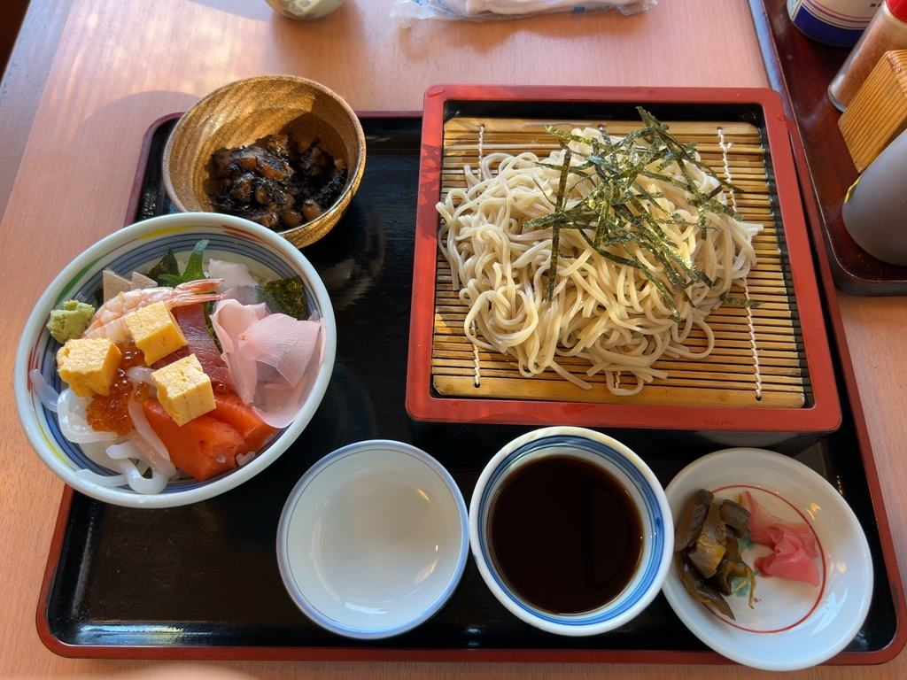
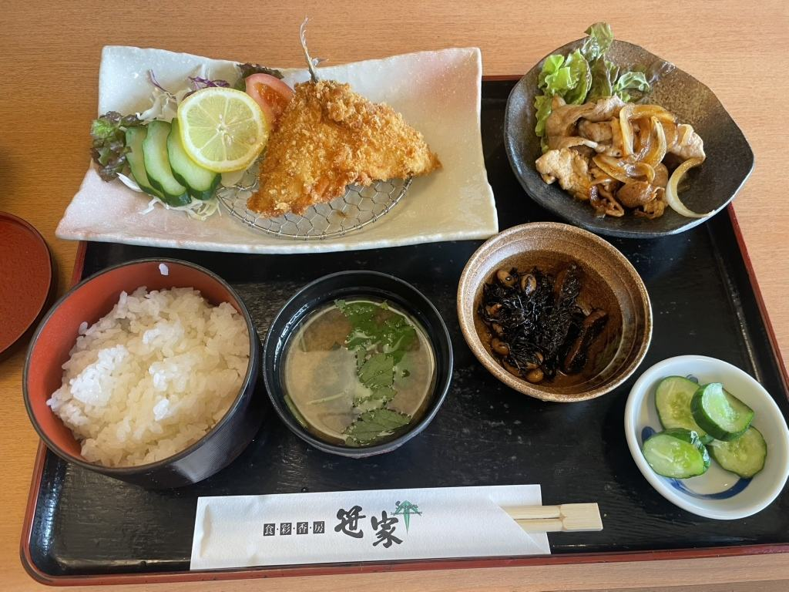
お昼には、「おもてなし昼の膳」「こだわりの昼の膳」「まんぷく丼もの」の、昼だけのお品書きをご用意しております。そば・うどんの付くものは、温かいものと冷たいものをお選びいただけます。
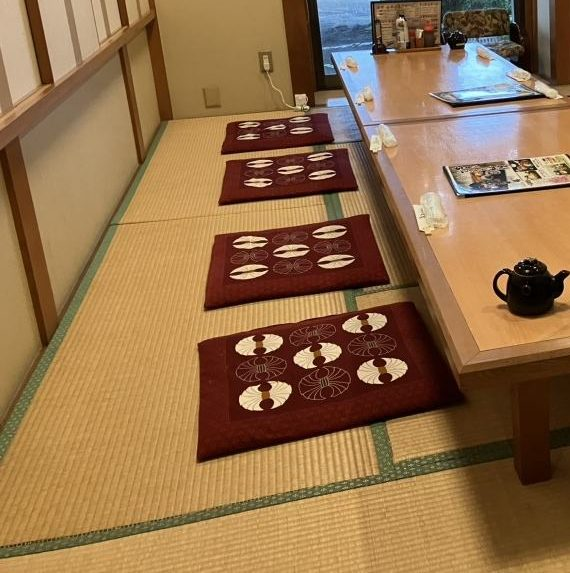
テーブル席と、お座敷をご用意しております。ご家族でも、職場のお仲間でも、ご人数に合わせてお席をお取りしますので、ご予約の際にお申し付けください。小さなお子様のお品書きもございます。
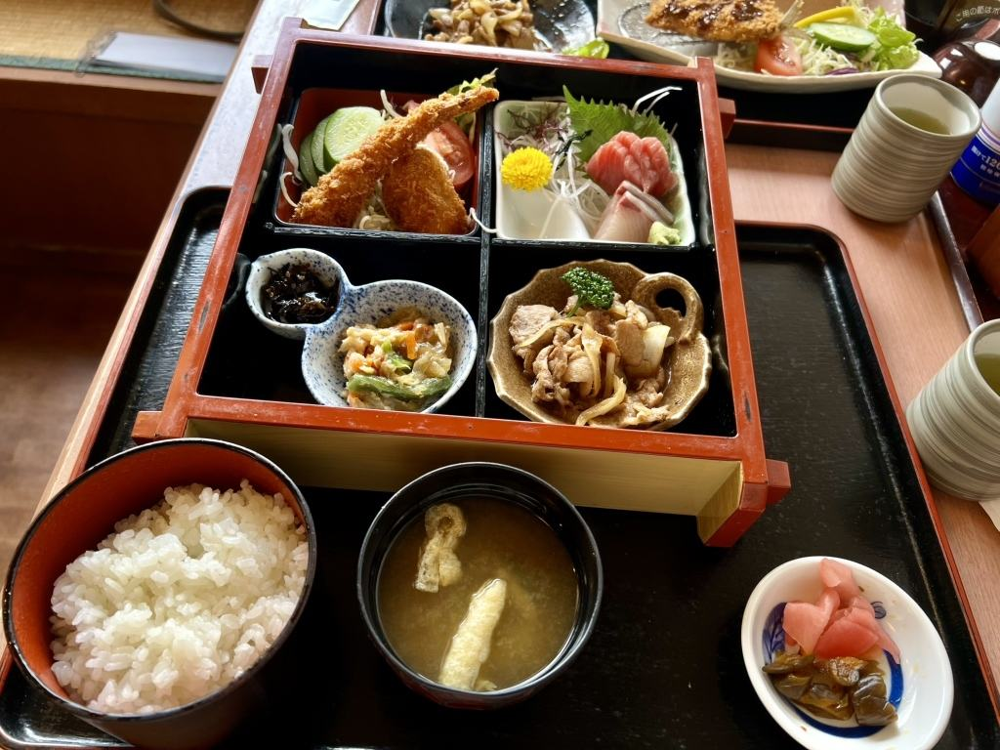
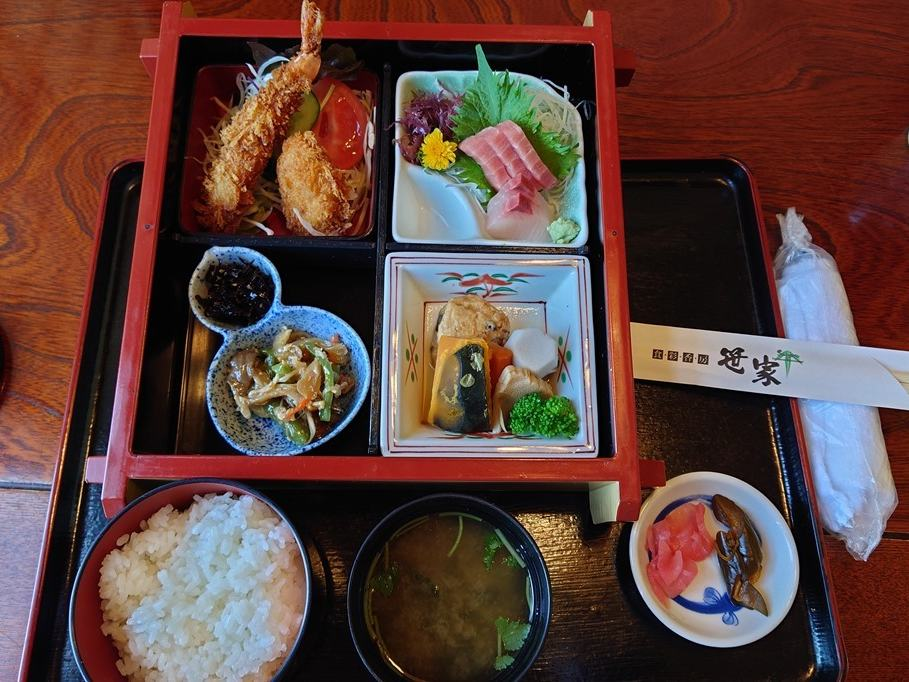
七五三などのお祝い、ご法事、職場のご宴会まで承っております。大広間と個室がございますので、ご人数に合わせてお使いいただけます。ご宴会のご予約には、マイクロバスでの無料送迎もいたしております。会席の松花堂は、ご自宅までお届けもいたします。仕出し料理や各種お弁当も、お気軽にご相談ください。
| 大広間 | 48名様まで |
|---|---|
| 送迎 | 10名様以上で宴会料理をご予約の場合、マイクロバスで無料送迎いたします |
| 会席 | 3,300円〜 |
| ご法事膳 | 4,400円 |
| 仕出し・お弁当 | 1,080円より |
釜めしから、ご宴会の会席まで。お品書きはこちらでご覧ください。
「メニューを眺めると海鮮類、とんかつ、釜飯、天ぷら等、和食全般に及び、定食としてのセットメニューがとても豊富で目移りしてしまうほど」
お客様の声より（2026年5月）
「周りを見ると釜飯を注文している方が多く」
お客様の声より（2026年4月）
「意外に量が多く、小ぶりな茶碗とは言え4杯分」
お客様の声より（2026年1月）
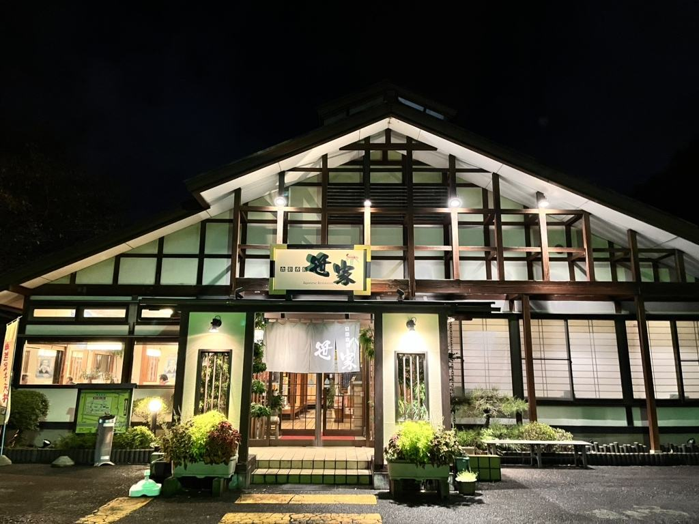
新4号国道沿いの一軒家です。お車でお越しください。休業日は、毎月 X（旧Twitter）でお知らせしております。祝日のある週は休みの曜日が動くことがございますので、お出かけ前にご覧ください。ご予約、ご宴会のご相談はお電話で承ります。
| 住所 | 〒323-0808 栃木県小山市出井1035-34 |
|---|---|
| 電話 | 0285-25-0427 |
| 営業時間 | 昼 11:00〜14:30（土日祝も同じ。釜めしのご注文は平日14:00・土日祝14:30まで）／夜 17:00〜21:30 |
| 定休日 | 火曜・水曜（祝日に当たる週は翌平日に振替） |
| 駐車場 | 25台（新4号国道沿い） |